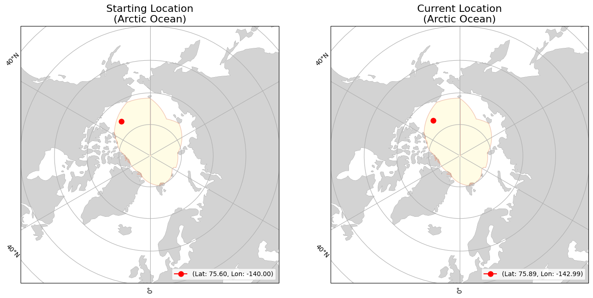
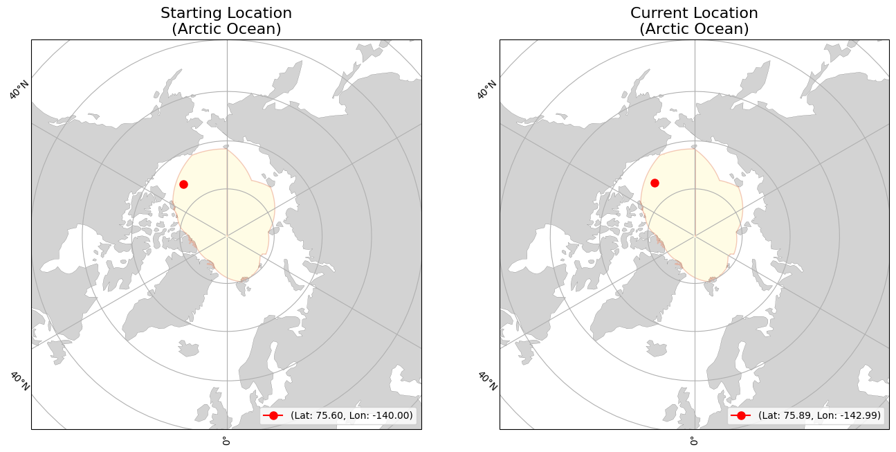

lon=-139.9972
(Arctic Ocean)
lon=-144.3972
(Arctic Ocean)
|
|
Buoy | Movement | Temperature | |||
|---|---|---|---|---|---|---|
| ID | 300234062552760 | Initial Position | lat=75.604 lon=-139.9972 (Arctic Ocean) |
Average Air Temperature | avg_air_temp | |
| Type | SVP-BA | Current Position | lat=76.154 lon=-144.3972 (Arctic Ocean) |
Minimum Air Temperature | min_air_temp | |
| Start Date | 09-04-2024 | Daily Distance Mean | 16.268 | Maximum Air Temperature | max_air_temp | |
| End Date | 12-26-2024 | Daily Distance Median | 9.203 | Average Sea Surface Temperature | avg_sst | |
| Status | floating | Daily Distance Standard Deviation | 27.574 | Minimum Sea Surface Temperature | min_sst | |
| Total Distance Start to End Dates | 1854.511 | Maximum Sea Surface Temperature | max_sst | |||
 
